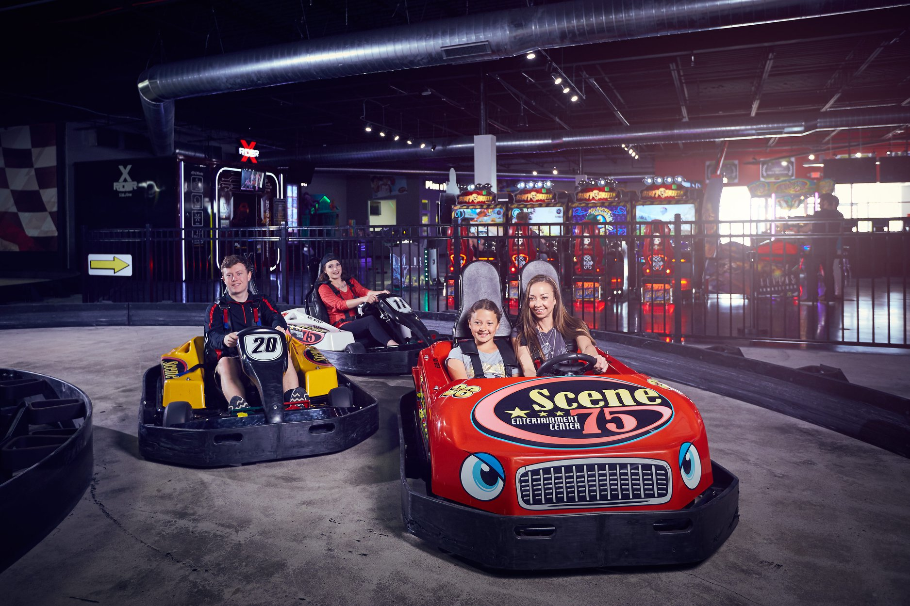
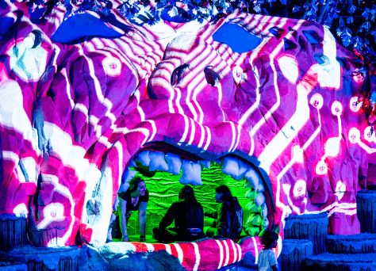
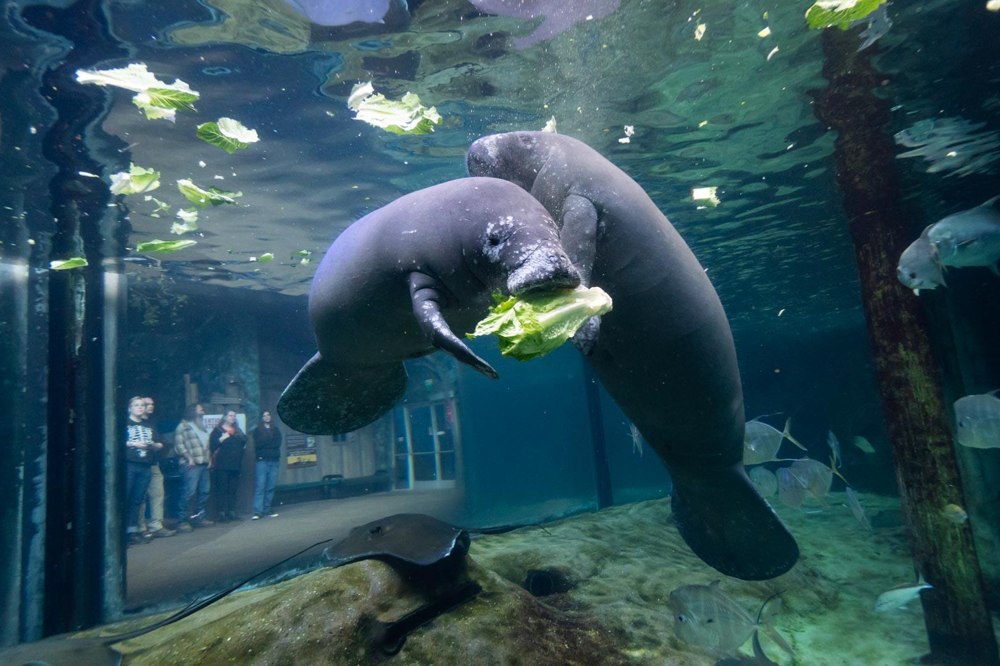
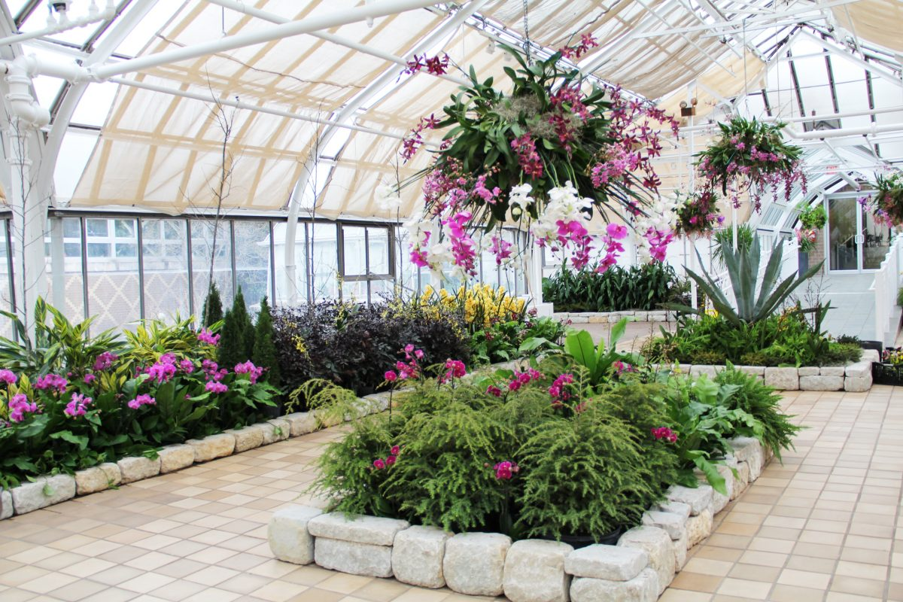
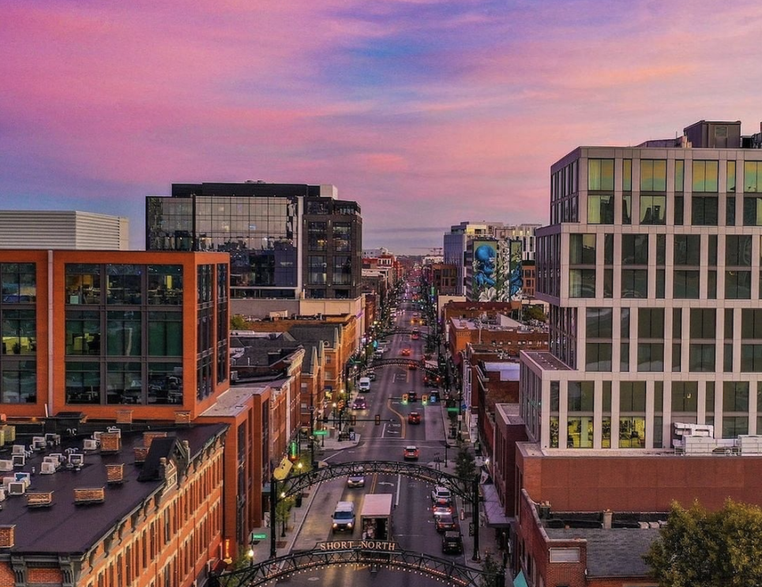

Columbus is honestly one of those cities where you never run out of things to do. Whether you're into science museums, immersive art experiences, world-class zoos, or just wandering around a cool neighborhood, there's something here for everyone. Here are some of the best spots to check out!
COSI is a science museum and research center located right in Downtown Columbus (and next to the Scioto River, an amazing view!). It features more than 300 interactive exhibits within themed areas in the museum.
Scene75 is a large indoor entertainment center that features arcade games, go-karts, laser tag, an indoor drop tower, and even an indoor roller coaster! There are plenty of food options and it is located inside the Tuttle Mall, so you can do some shopping afterwards!

Otherworld is a 32,000-square-foot immersive art installation that feels like stepping into a sci-fi movie. It features over 40 rooms filled with interactive tech, large-scale puzzles, and psychedelic secret passages. It's essentially a "choose your own adventure" playground where the environment reacts to your movement.

Consistently ranked as one of the best zoos in the country, this massive complex is home to more than 10,000 animals. In February, you can enjoy "Winter at the Zoo" with discounted admission and indoor exhibits like the Manatee Coast and the Discovery Reef Aquarium.

This beautiful botanical landmark features the iconic 1895 John F. Wolfe Palm House. It's famous for its collection of glass artwork by Dale Chihuly and its diverse "biomes" that let you walk from a Himalayan mountain range into a tropical rainforest in minutes.

Known as the "art and soul" of Columbus, the Short North is a vibrant neighborhood filled with local galleries, boutiques, and some of the best food in the city. It's perfect for a "Gallery Hop" or just walking around to see the murals and iconic lighted arches over High Street.
